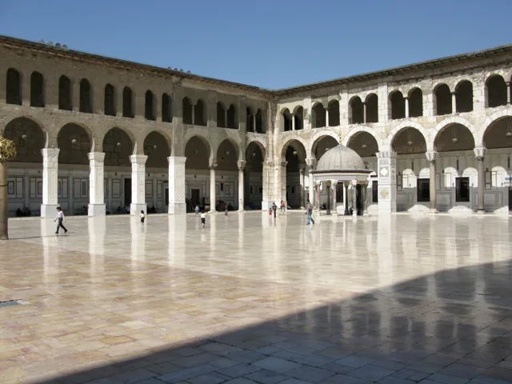
دمشق
Vyacheslav Argenberg · 2008-08-15
مكان واحد. حكايات لا تنتهي.
صور مرخصة محفوظة محلياً. صُغّرت وحُوّلت إلى WebP، وقد تُقصّ في العرض. تبقى الأعمال ذات ترخيص المشاركة بالمثل خاضعة له.
الرسوم التوضيحية أصلية للمشروع، وليست صوراً توثيقية. الخطوط Cairo وInter مرخصة وفق SIL Open Font License 1.1.

Vyacheslav Argenberg · 2008-08-15
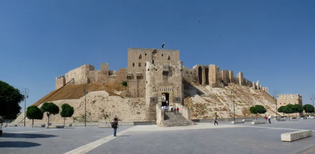
Memorino · 2010-05-26
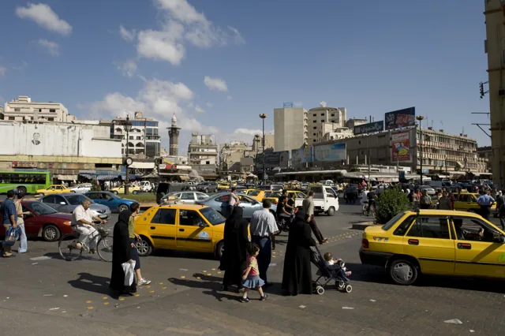
Dosseman · 2008-09-13
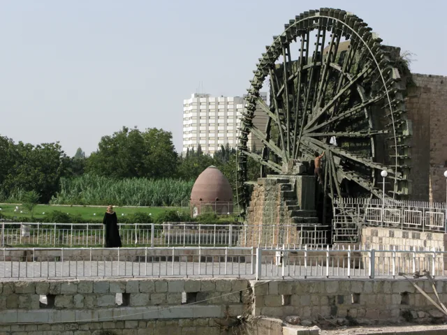
Vyacheslav Argenberg · 2008-08-19
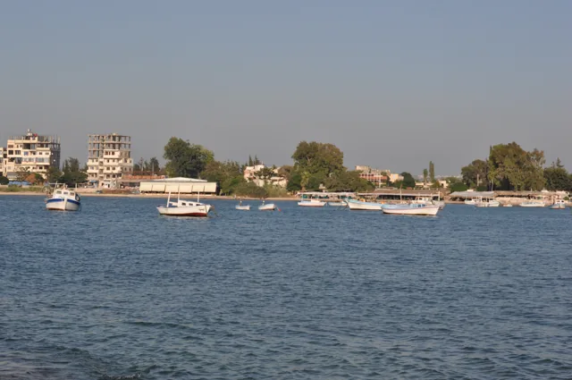
Abd Alsattar Ardati · 2020-05-08
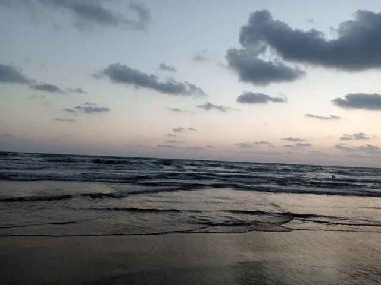
Hayan Alhasan · 2022-08-14
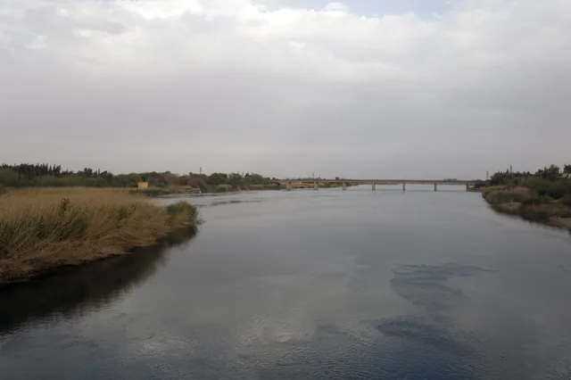
Dosseman · 2009-04-12
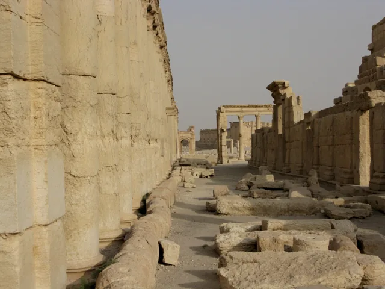
Vyacheslav Argenberg · 2008-08-28
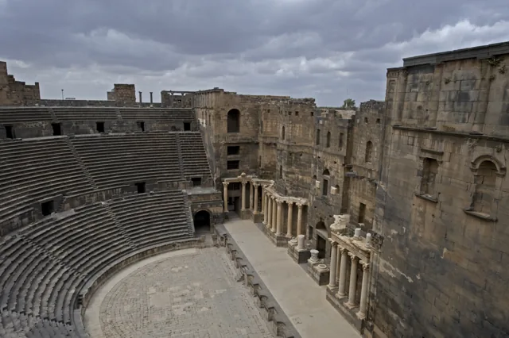
Dosseman · 2009-04-15
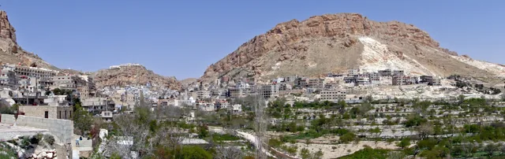
Bernard Gagnon · 2010-04-01
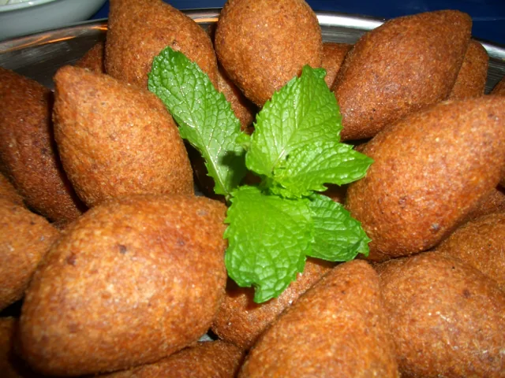
Bazel · تاريخ الالتقاط غير موثق
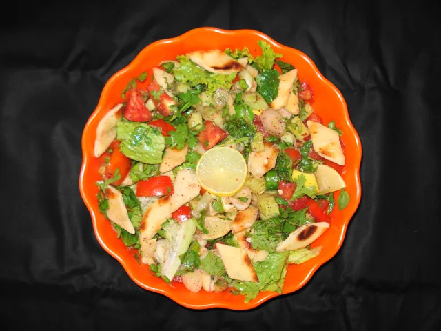
Miansari66 · تاريخ الالتقاط غير موثق
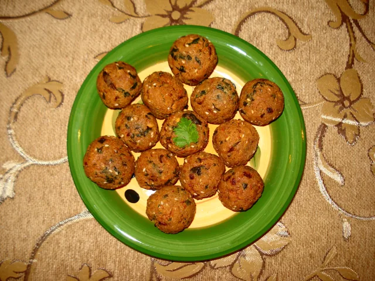
Miansari66 · تاريخ الالتقاط غير موثق
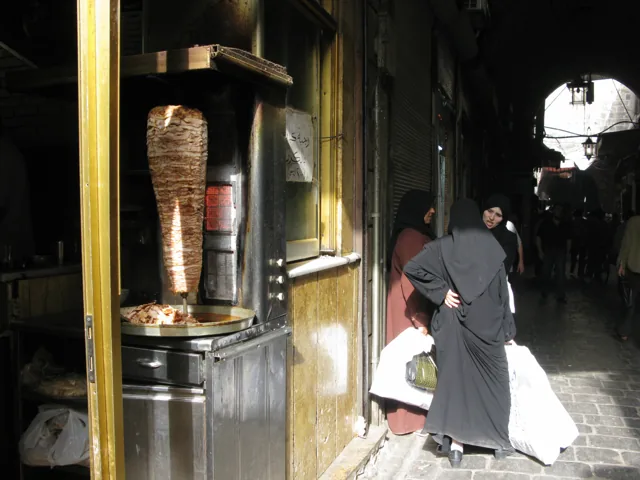
Vyacheslav Argenberg · 2008-08-21
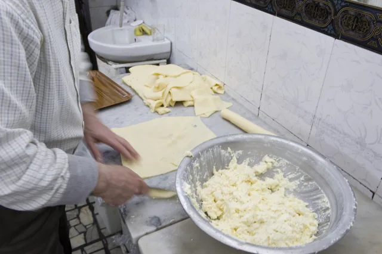
Dosseman · 2009-04-06